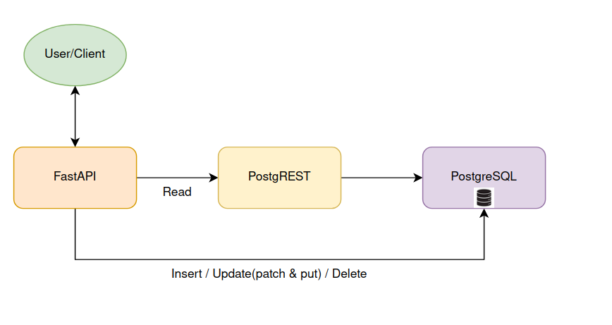

August 25, 2023 · Saail Narvekar
Project: Support basic SensorThings API (STA) for istSOS Organization: Osgeo (Open Source Geospatial Foundation)
During the Google Summer of Code 2023, I worked on the project “istsos-miu”1 part of the OSGeo2 Foundation.The goal of my project is to add OGC standard of Sensor Things API(STA) to istSOS project. The OGC SensorThings API provides an open, geospatial-enabled and unified way to interconnect the Internet of Things (IoT) devices, data, and applications over the Web. The project aims to extend interoperability and implement some of the basic APIs from STA that could be adopted in a new revised version of istSOS. FastAPI can be used for the request and response of the istSOS STA services. As PostgreSQL is used as the primary data store or data . PostgREST is a standalone web server that could be used to turn the PostgreSQL database of STA data directly into a RESTful API.
Prior to GSoC, an existing implementation of the Sensor Things API standard was available in Java. However, the goal was to develop a new implementation using Python, allowing seamless integration with the istsos project. As a result, the project was initiated from the ground up, enabling a fresh Python-based implementation.
During the Google Summer of Code 2023, my main aim was to elevate the capabilities of the istsos project by aligning it with the principles outlined in the Sensor Things API standard 3. I effectively accomplished this objective by actively engaging with different facets of the project. These contributions were pivotal in its advancement and enhancing overall user experience. My contributions can be divided into the following categories:
The created database schema was not fully following STA standards and need to be updated. The entity relation was updated as per the STA OGC standard documentation. Schema was updated to add more data to the database entity table. Observation entity table required lot of brain storming. Vaious possible table design were thought and tested for the implementation.
In the testing process, the feasibility of utilizing FastAPI for efficient web service handling and postgREST for converting a PostgreSQL database into a RESTful API was examined. FastAPI serves as the bridge for sending requests to the postgREST server, which then interacts with the PostgreSQL database to retrieve the requested information.
To effectively test the newly created STA parser, a substantial amount of test data was necessary. To achieve this, mock datasets were generated based on user-configured settings using python script. This synthetic data was generated based on the specified count in the user configuration. The data was then seamlessly incorporated into the database through an automated process.
A comprehensive testing of the STA REST APIs was performed, covering data retrieval, insertion, updates, and deletions across STA entities. The testing spanned more than 100 queries, encompassing complex queries outlined in the STA OGC documentation. For future testing, the configuration JSON file from the Hoppscotch API testing tool was exported.
The objective of implementing the Sensor Things API into the istsos project has been successfully realized. The project has now reached a stage where users can effectively utilize it to engage with the istsos server through the Sensor Things API. While the project is currently under development, it will continue to progress and evolve in the times ahead.

While substantial strides have been taken during the Google Summer of Code 2023, some features of the official Sensor Things API standard couldn't be fully integrated within the allotted timeframe. These features encompass:
Implementing the MQTT extension for seamless communication between IoT devices and applications.
Incorporating support for data arrays to enable efficient storage and retrieval of multiple data points.
Introducing the MultiDatastream extension to accommodate scenarios involving multiple data streams.
Developing the capability to handle batch requests efficiently.
Addressing the auto-creation of historical location information, ensuring accurate historical data representation.
Implementing data pagination to manage and present large datasets effectively.
Adding built-in query functions to simplify and enhance data querying capabilities.
Incorporating data count functionality for accurate monitoring of data volume.
Integrating support for querying data using status codes and expanding data analysis options were aims within the project scope, yet complete realization wasn't feasible within the allotted timeframe. These aspects present prospects for future advancement and growth of the "istsos-miu" project, offering an avenue to enhance functionalities and align more comprehensively with the expansive Sensor Things API standard.
While these features are yet to be fully realized, the current contributions have established a robust groundwork, positioning them for potential integration and development in the project's future endeavors.
Testing the APIs of the above features once implemented.
The code that I have written during the Google Summer of Code 2023 has been merged into the traveltime branch of the istsos project. The code can be found in the following repository:
https://github.com/istSOS/istsos-miu/tree/traveltime
The list of pull requests that have been merged can be found here:
https://github.com/istSOS/istsos-miu/pulls?q=is%3Apr+is%3Aclosed+author%3ASaailN
Throughout the course of the Google Summer of Code 2023, I have gained a wealth of knowledge and experience that has significantly enriched my skills and understanding of software development, programming languages, and open-source collaboration. The journey of contributing to the “istsos-miu” project and aligning it with the Sensor Things API standard has taught me invaluable lessons in various areas:
My engagement with the Sensor Things API (STA) has deepened my understanding of PostgreSQL as a powerful relational database for managing geospatial and time-series data. This experience has revealed the nuances of database schema design, indexing, and query optimization specific to spatial and temporal data. I've learned how to leverage PostgreSQL's spatial capabilities to store, query, and analyze geospatial information efficiently. This journey has underscored the importance of selecting appropriate data types, indexing strategies, and SQL constructs to ensure optimal performance when working with complex geospatial datasets within the context of STA.
Contributing to the "istsos-miu" project provided me with a deep dive into the intricacies of RESTful architecture and API design. This hands-on experience enabled me to grasp the principles of creating interfaces that adhere to industry best practices for web-based functionality exposure. As a valuable learning experience, I gained insights into creating an API service that seamlessly integrates with the istsos server, effectively utilizing the capabilities of the Sensor Things API.
Engaging in an open-source project under the OSGeo Foundation has provided a rewarding experience in collaborative software development. Through activities like code reviews, discussions, and interactions with mentors and fellow contributors, I have acquired valuable skills in effective remote collaboration. The feedback received during the review process has significantly enhanced the quality of my code and improved my ability to communicate complex technical ideas clearly.
Participating in the Google Summer of Code demanded adept project management and time management capabilities. Juggling project objectives, meeting crucial milestones, and navigating unforeseen obstacles within the stipulated period provided valuable lessons in task prioritization and efficient effort management.
Implementing the Sensor Things API standard required an in-depth grasp of its technical specifications and underlying principles. This entailed extensive research, learning, and adaptation of concepts related to databases, RESTful APIs, and data querying. Delving into unfamiliar realms and swiftly mastering novel concepts has enhanced my adaptability and resourcefulness as a developer.
As the Google Summer of Code 2023 concludes, I'm immensely grateful for the opportunities provided by Google and the OSGeo organization. My involvement in the "istsos-miu" project, aligned with the Sensor Things API, has been profoundly transformative. The project's scope has naturally expanded beyond its initial proposal, demonstrating its potential for a larger impact. Despite this, we've achieved a remarkable level of functionality that aligns with the core goal of implementing the Sensor Things API within the istsos project. This empowers users to seamlessly interact with the istsos server through a standardized interface, streamlining IoT data management.
My heartfelt appreciation extends to Google, OSGeo, and especially Massimiliano and Daniele, whose guidance and support have been instrumental. Their mentorship has been pivotal in surmounting challenges and pushing the project to new heights. This journey has considerably enhanced my skills, particularly in areas like language design, API development, and collaboration within the open-source community. Looking forward, I'm enthusiastic about continuing my contributions to open-source projects and applying the lessons learned here to embrace fresh opportunities.